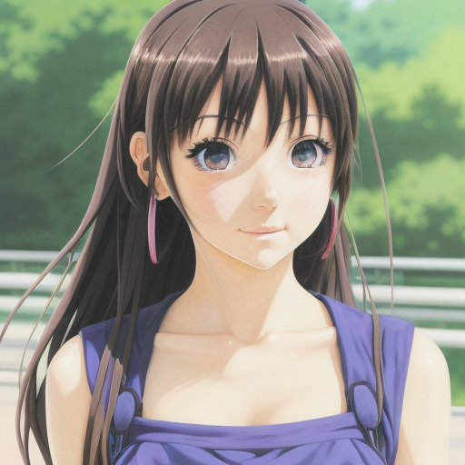
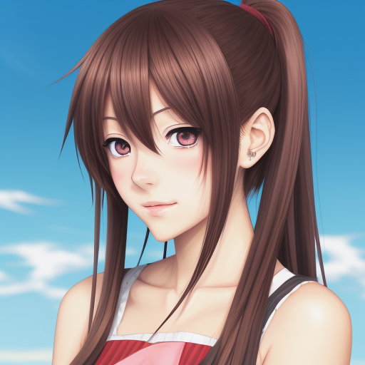

First thing is that we have to download a couple of items.
Lets start by getting Stable Diffusion up and running on your Windows Computer. I believe that the best way to do this is to follow the first video by Mr.Sarikas
After you have followed those video instructions you should be able to utilize the Automatic1111 WebUI and start typing in prompts to generate images.
But lets say that you're not happy with how bad the images look. We can go over a few other items:
LORAS, also known as "Low-Rank Adaptation of Large Language Models". Seems quite a stretch to me to fit that down into "LORA" but there you have it. Basically what these sweet bad boys do is help instruct the image constructor to take into account certain parameters that you want. For example, there is a LORA that makes any human pose with a peace symbol instead of you manualy typing "Man/Woman/Trans making a peace symbol." here are some images that show the text prompt "Portrait of an anime girl" with a LORA model ON and a LORA model OFF:
This is the first image with the LORA ON:

This is the second image with the LORA OFF:

Can really have buttered toast without bread or the cow to make the butter: Enter MODELS!!!! These things are fantastic and enable you to really get crazy with what you want to generate. I have found that the best models can be downloaded and browsed from this website: (WARNING SOME IMAGES ARE NOT APPROPRIATE FOR YOUNGER AUDIENCE AND CONTAINE NUDITY SO BROWSE AT YOUR OWN RISK)
Okay, so now you should have downloaded some of the models you want but what do you do with them once you have them? I have an IDEA! Lets watch another video!
If you're a massive nerd and like reading papers feel free to click on this link for one published by Harvard: HBJ